产品列表
产品列表主要用于查找产品，查看以及修改产品信息，如：产品名称，产品照片，类别名称，成本价（USD），FBA BP （USD），可发库存，等。
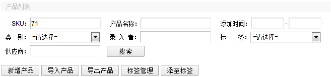
上图为产品搜索栏与功能栏，可通过SKU，产品名称，添加时间，类别，供应商搜到产品，按SKU搜索只是匹配前面，如输入'71'，罗列的结果都是以71开头的SKU，列表处SKU红色为3天内新产品，橙色为7天内新产品，可发库存列可查看该SKU在各个仓库中的库存。

①新增产品：单独增加一个产品，进入页面填写完信息保存即可完成。（后面详细讲解）
②导入产品：批量增加产品， 先下载表格模板，如下图所示 。
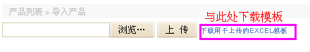
下载后，在表格上面填写好产品信息后上传保存即可。
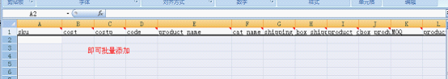
③导出产品：导出当前页面的产品信息，可以选择需要导出的字段，如果拥有权限，可以导出原始成本字段。

导出单个产品时，须先搜索到该产品，再导出相关信息。
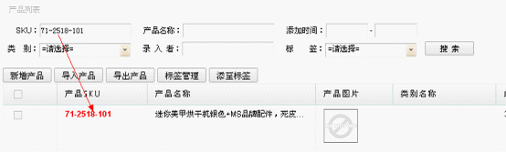
注意：不是导出打勾的产品，是导出列表页的所有数据，如下图属错误操作。
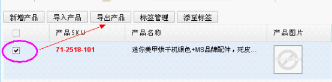
导出的相关信息储存在EXCEL表格中，当我选择导出所有产品名称时，导出的表格内容如下图所示：
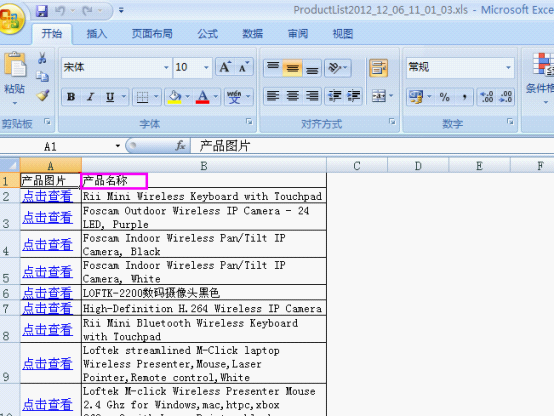
④标签管理：用于添加标签，相当于个人的收藏夹，方便管理产品，例如，可以将产品归类。
具体操作：点击标签管理—>添加标签
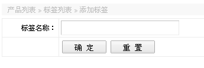
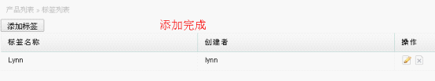
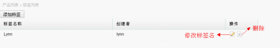
⑤添至标签：用于将页面选中的产品添加到上面录入的标签中。
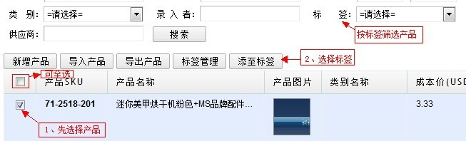
若目标产品个数较少，可单独于“产品标签”栏，更改、添加，点击保存即可完成。
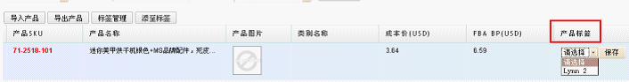
导出模板：用于导出一个包含产品信息的html模板，上传于amazon或淘宝做listing用，如下图所示：
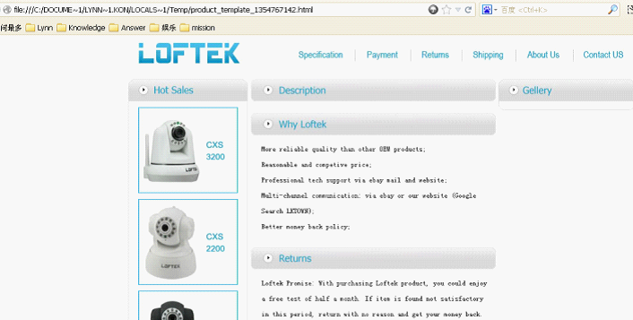
产品列表最后一列有操作按钮修改和删除两个选项。点击删除 ，即可将产品信息全部删除。点击修改，可修改产品任一信息。（相关产品管理中的新增产品。）